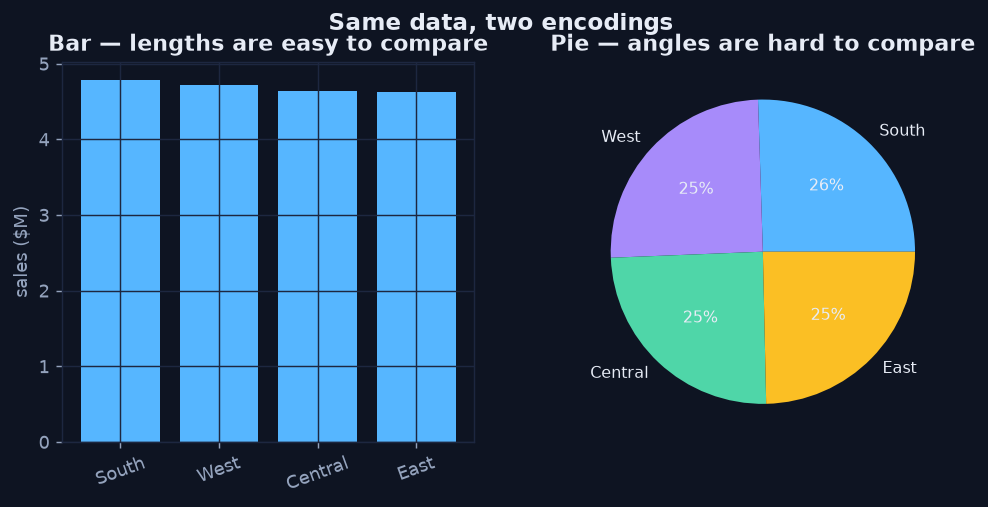
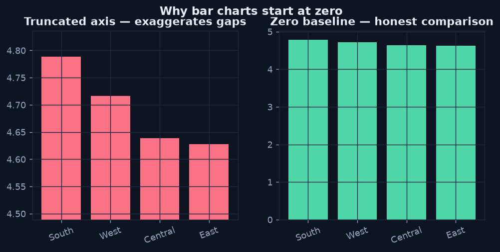

Perceptual Encoding
Chapter 2 — Why Position Beats Colour
A chart maps data onto visual channels — position, length, angle, area, and colour — and the eye reads some of those channels far more accurately than others. Decades of graphical-perception research (notably Cleveland & McGill's 1984 study) found a consistent ranking: people judge position along a common scale most accurately, then length, then angle and area, with colour hue and area read least precisely.
Two practical rules fall out of that ranking, and both are easy to see once you put the right and wrong encoding side by side.
Rule 1 — Encode the Key Comparison as Length, Not Angle
A pie chart asks the eye to compare angles and areas — exactly the channels we read worst. A bar chart asks it to compare lengths from a shared baseline — one of the channels we read best. Same data, same four regions: the bar chart makes the ranking obvious; the pie makes you squint and read the percentage labels (which means the chart isn't doing its job).
Python · pandas + matplotlib
s = orders.groupby("region")["sales"].sum().sort_values(ascending=False) / 1e6
fig, (a1, a2) = plt.subplots(1, 2, figsize=(9, 3.8))
a1.bar(s.index, s.values) # lengths — easy
a1.set_title("Bar — lengths are easy to compare")
a2.pie(s.values, labels=s.index, autopct="%1.0f%%") # angles — hard
a2.set_title("Pie — angles are hard to compare")
Same four numbers. The bar's lengths rank instantly; the pie's near-equal slices force you to read labels.
Rule 2 — Start Value Axes at Zero
Because the eye compares length, the length must be proportional to the value. Truncating a bar chart's axis cuts off the bottom of every bar, so a small real difference looks enormous. The two panels below plot the identical region sales — only the y-axis range differs. The left panel screams "huge gap!"; the right panel tells the truth: the regions are close.
Python · pandas + matplotlib
fig, (a1, a2) = plt.subplots(1, 2, figsize=(9, 3.8))
a1.bar(s.index, s.values)
a1.set_ylim(s.min() * 0.97, s.max() * 1.01) # truncated — misleading
a1.set_title("Truncated axis — exaggerates gaps")
a2.bar(s.index, s.values)
a2.set_ylim(0, s.max() * 1.05) # zero baseline — honest
a2.set_title("Zero baseline — honest comparison")
Identical data, two axes. Truncating the baseline manufactures a dramatic gap that isn't there.
Colour Is for Categories, Not Magnitude
Since colour hue is read least precisely, never ask a reader to judge a quantity by hue on a categorical palette. Use colour to label groups, or use a single sequential scale (light-to-dark) when colour must carry magnitude, as in a heatmap. And design for colour-blind readers: don't rely on red-versus-green alone — pair colour with shape, order, or direct labels.
The Takeaway
- Encode the comparison you most want made as position or length.
- Keep bar baselines at zero; a truncated axis is a (usually unintentional) lie.
- Reserve colour for categories or a single sequential magnitude scale.